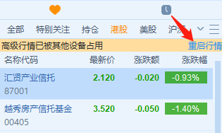

Q&A¶
FutuOpenD相关¶
Q2:因自带数据不存在退出¶
A: 一般因权限问题导致自带数据拷贝失败，可以尝试将程序目录下Appdata.dat解压后的文件拷贝到程序数据目录下。
- windows程序数据目录：%appdata%/com.futunn.FutuOpenD/F3CNN
- 非windows程序数据目录：~/.com.futunn.FutuOpenD/F3CNN
Q3:FutuOpenD服务器启动失败¶
A: 检查是否有配置了同样端口的FutuOpenD在运行以及是否有其他程序占用所配置的端口。
Q4:如何验证手机验证码？¶
A: 在FutuOpenD界面上或远程到Telnet端口输入命令input_phone_verify_code -code=123456（手机验证码）。
注 ：【-code=123456】前有空格
Q6:在同一设备多次验证设备锁¶
A: 设备标识随机生成并存放于com.futunn.FutuOpenD\F3CNN\Device.dat文件中。
- 如果删除或损坏会重新生成新设备标识然后验证设备锁
- 另外镜像拷贝部署的用户需要注意，如果多台机器的Device.dat内容相同，也会导致这些机器多次验证设备锁，删除Device.dat文件即可
Q7:FutuOpenD是否有提供Docker镜像？¶
A: 目前没有。
Q8:一个账号可以登录多个FutuOpenD吗？¶
A: 一个账号可以在多台机器上登录FutuOpenD或者其他客户终端，最多10个终端同时登录。同时有“行情互踢”的限制，只能有一个最高权限行情。例如：两个终端登录同一个账号，只能有一个港股Level2行情，另一个是港股BMP行情。
Q9:如何控制FutuOpenD和其他客户端（桌面端和移动端）的行情权限？¶
A: 应交易所的规定，多个终端同时在线会有“行情互踢”的限制，只能有一个终端获得最高权限行情。FutuOpenD命令行版本的启动参数内置了<auto_hold_quote_right>参数，用于灵活配置行情权限。当该参数选项开启时，OpenD在行情权限被抢后，会自动抢回。如果10秒内再次被抢，则其他终端获得最高行情权限（OpenD不会再抢）。
Q10: 如何优先保证OpenD行情权限？¶
A: OpenD启动参数<auto_hold_quote_right>设置为1，移动端或桌面端不要在10秒内连续两次抢最高权限（登录算一次，点击“重启行情”算第二次）。

Q11: 如何优先保证移动端（或桌面端）的行情权限？¶
A: OpenD启动参数<auto_hold_quote_right>设置为0，移动端或桌面端在OpenD之后登录即可。
Q12: 使用带 UI 界面 FutuOpenD 记住密码登录，长时间挂机后提示连接断开，需要重新登录？¶
A:使用带UI界面FutuOpenD，如果选择记住密码登录，用的是记录在本地的令牌。由于令牌有时间限制，当令牌过期，且出现且网络波动或富途后台发布，就可能导致与后台断开连接后无法自动连接上的情况。因此，带界面的FutuOpenD如果希望长时间挂机，建议手动输入密码登录，由 FutuOpenD 自动处理该情况。
Q13：使用遇到无法解决的问题时，如何请富途的研发人员协助排查？¶
- A:
通过QQ/微信，联系富途OpenAPI研发人员，方便即时沟通和传输文件。
详述发生错误的时间，OpenD版本号，API版本号，脚本语言，接口名或协议号，详细入参和返回的短代码或截图。
必要时，须提供FutuOpenD日志，方便定位确认问题。交易问题需要info日志级别，行情问题需要debug日志级别。日志级别 log_level 可以在 FutuOpenD.xml中 配置 ，配置后需要重启FutuOpenD方能生效，待问题复现后，将该段日志打包发给富途研发人员。
日志路径如下：
windows：%appdata%/com.futunn.FutuOpenD/Log
非windows：~/.com.futunn.FutuOpenD/Log
连接相关¶
Q2:脚本连接上之后没反应¶
A: 检查是否有启动API版本的PC牛牛(3.42)，若有则请关闭API版本的PC牛牛或者修改该版本的端口配置。
Q3:连接上一段时间后断开¶
A: 如果是自己对接协议，检查下是否有定时发送心跳维持连接。
Q4:Linux下通过multiprocessing模块以多进程方式运行Python脚本可能会连不上FutuOpenD¶
A: Linux/Mac环境下以默认方式创建进程后，父进程中py-futu-api内部创建的线程将会在子进程中消失，导致程序内部状态错误。可以用spawn方式来启动进程：
import multiprocessing as mp
mp.set_start_method('spawn')
p = mp.Process(target=func)
...
行情相关¶
Q1:订阅失败¶
A: 检查订阅接口返回的错误描述，常见有以下情况：
- 帐号无港股Lv2权限
- 帐号有港股Lv2权限，但被其他终端踢掉行情权限
- 帐号有赠送的港股Lv2权限，但赠送的港股Lv2权限只能在大陆IP机器使用。
- 订阅额度不足，订阅额度规则参见 订阅限制
Q2:反订阅失败¶
A: 订阅至少一分钟后才能反订阅。
Q3:反订阅成功但没返还额度¶
A: 所有连接都对该行情反订阅才会返还额度。
Q4:订阅不足一分钟关闭脚本会返还额度吗？¶
A: 不返还。连接关闭后，订阅不足一分钟的行情一段时间后自动反订阅。
Q5:请求限频逻辑是怎样？¶
A: 30秒内最多n次指第1次和第n+1次请求间隔需要大于30秒。
Q6:自选股添加不上是什么原因？¶
A: 请先检查是否有超出上限，或者删除一部分自选。
Q7：为什么 OpenAPI 端的美股报价和牛牛显示端的全美综合报价有不同？¶
A: 由于美股交易分散在很多家交易所，富途有提供两种美股基本报价行情，一种是 Nasdaq Basic（Nasdaq 交易所的报价），另一种是全美综合报价（全美13家交易所的报价）。而Futu OpenAPI 的美股正股行情目前仅支持通过行情卡购买的方式获取 Nasdaq Basic，不支持全美综合报价。因此，如果您同时购买了显示端的全美综合报价行情卡，和仅用于 OpenAPI 的 Nasdaq Basic 行情卡，确实有可能出现牛牛显示端和 OpenAPI 端的报价差异。
Q8：OpenAPI行情卡在哪里购买？¶
A:
| 港股市场 | 港股LV2高级行情（仅非中国大陆 ip） | https://qtcard.futu5.com/buy?market_id=1&channel=2&good_type=1#/ |
| 期权期货LV2高级行情（仅非中国大陆 ip） | https://qtcard.futu5.com/buy?market_id=1&channel=2&good_type=8#/ | |
| 港股LV2+期权期货LV2行情（仅非中国大陆 ip） | https://qtcard.futu5.com/buy?market_id=1&channel=2&good_type=9#/ | |
| 高级全盘行情（SF 行情） | https://qtcard.futu5.com/buy?market_id=1&channel=2&good_type=10#/ | |
| 美股市场 | Nasdaq Basic | https://qtcard.futu5.com/buy?market_id=2&channel=2&good_type=12#/ |
Q9：为什么有时候，获取实时数据的get接口响应比较慢？¶
A: 因为获取实时数据的get接口需要先订阅，并依赖后台给OpenD的推送。如果用户刚订阅就立刻用get接口请求，OpenD有可能尚未收到后台推送。为了防止这种情况的发生，get接口内置了等待逻辑，3秒内收到推送会立刻返回给脚本，超过3秒仍未收到后台推送，才会给脚本返回空数据。
涉及的get接口包括：get_rt_ticker、get_cur_kline、get_order_book、get_broker_queue、get_stock_quote。因此，当发现获取实时数据的get接口响应比较慢时，可以先检查一下是否是无成交数据的原因。
Q10：购买 OpenAPI 美股 Nasdaq Basic 行情卡后，可以获取哪些数据？¶
A: Nasdaq Basic 行情卡购买激活后，可以获取的品类涵盖 Nasdaq、NYSE、NYSE MKT交易所上市证券（包括美股正股和 ETF，不包括美股期货和美股期权）。
支持的数据接口包括：快照，历史 K 线，实时逐笔订阅，实时一档摆盘订阅，实时 K 线订阅，实时报价订阅，实时分时订阅，到价提醒。
Q11：各个行情品类的摆盘支持多少档？¶
A:
| 摆盘接口档数 | 类型 | BMP | LV1 | LV2 | SF |
| 港股市场 | 证券（含正股、窝轮、牛熊、界内证） | 0 | / | 10 | 全盘+千笔明细 |
| 期权期货 | 0 | 1 | 10 | / | |
| 美股市场 | 股票（含ETF） | / | 1 | 暂未支持 | / |
| 期权 | / | 1 | 10 | / | |
| A股市场 | 股票 | / | 5 | / | / |
交易相关¶
Q1:如何使用模拟交易？¶
A: 只要有牛牛帐号即可使用模拟交易，在使用交易接口时交易环境传入模拟环境即可。
Q2:模拟与真实交易是否有区别？¶
A: 有区别:
- 订单的状态不支持删除、部分成交、生效、失效状态
- 不支持生效失效、删除订单操作，仅支持支持改单， 撤单
- 不支持成交数据，包括今日成交，历史成交，成交推送
- 下单仅支持Normal类型
- 模拟交易不需要解锁交易
- 模拟交易不支持期货
更多模拟交易规则可跳转至 模拟交易规则。
Q4:是否支持A股交易？¶
A: 支持A股模拟交易，真实交易可通过A股通交易部分A股。
Q5:各市场支持的交易方向¶
A: 除了期货，其他股票都只支持传入买入和卖出，在空仓情况下卖出，产生的订单交易方向是卖空。
Q6:各市场支持的订单类型¶
- A:
- 港股支持增强限价单，竞价单，竞价限价单，绝对限价单，特别限价单
- 美股支持限价单，市价单
- A股通仅支持A股限价委托
- 港股的股指期货支持限价单，竞价单
- 港股的美元黄金期货、香港的股票期货支持限价单
Q7:各市场支持的订单操作¶
- A:
- 港股支持改单、撤单、生效、失效、删除
- 美股仅支持改单和撤单
- A股通仅支持改单和撤单
- 期货支持改单、撤单、删除